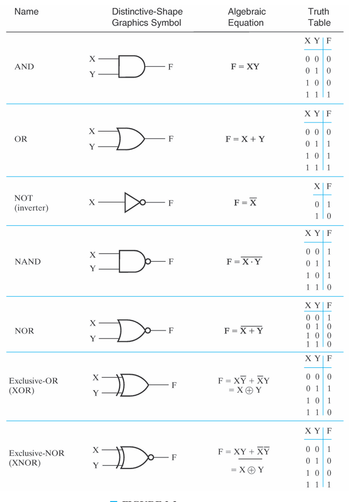
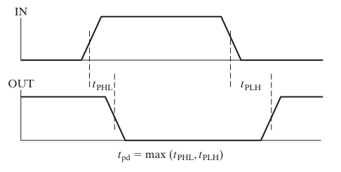
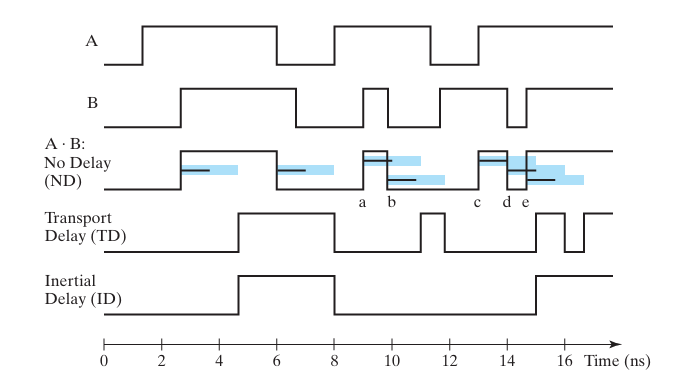
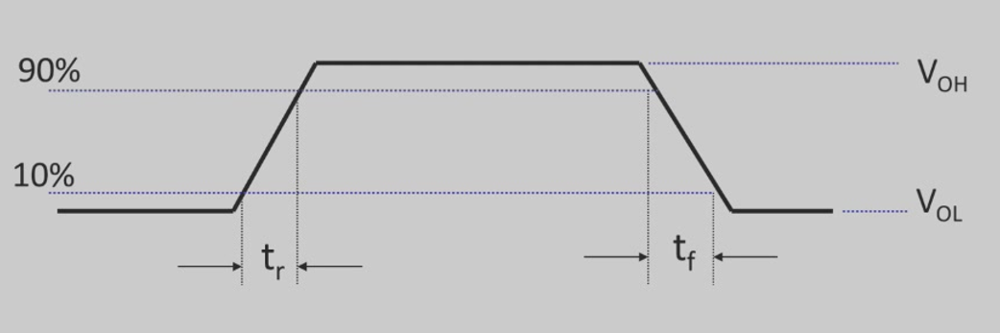
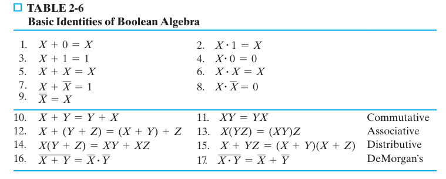
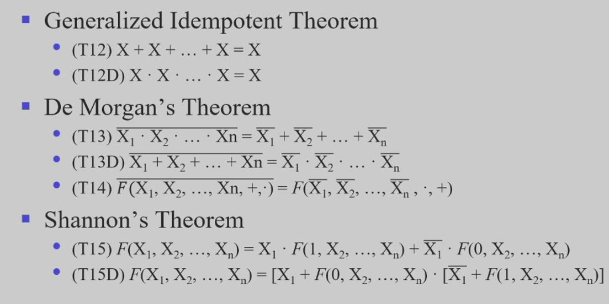
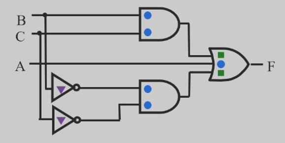
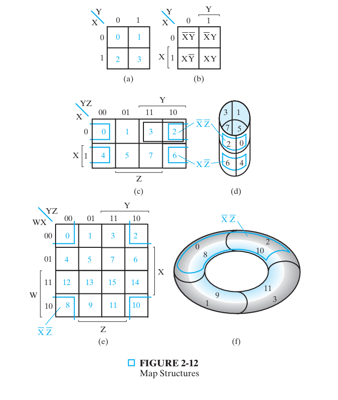

Logic Gates¶
- logic gate : logic gates implement logic functions.
-
boolean algebra : a useful mathematical system for specifying and transforming logic functions.
-
AND : is denoted by a dot ( \(X \cdot Y\) )
- OR : is denoted by a plus ( \(X+Y\) )
- NOT : is denoted by an overbar ( \(\bar{X}\) ), a single quote mark ( \(X'\) ), or ( \(\sim X\) )
- perform logic functions : inversion ( \(NOT\) ) , \(AND\) , \(OR\) , \(NAND\) , \(NOR\) , etc.
- single-input : \(NOT\) gate, buffer
- two-input : \(AND\) , \(OR\) , \(XOR\) , \(NAND\) , \(NOR\) , \(NXOR\)
- multiple-input

Note
- buffer (缓冲器) 的逻辑功能是 \(F=X\) ，实际可用作信号放大，速度匹配等功能。
- 任何函数都可转化成 与非 或 或非（德摩根律），故 与非门 和 或非门 又称 universal gate 通用门
- 正逻辑是高电平对 \(T\)， 低电平对 \(F\)，负逻辑反之。
Some IC Parameters¶
-
\(V_{cc}\) : power supply voltage
- Common across a logic family (e.g., 5V for all HC parts)
- \(V_{CC}\) and \(GND\) commonly called
power supply tails(Sometimes \(V_{DD}\) and \(V_{SS}\) for \(CMOS\) devices)
-
Logic level : range of voltages for 0 and 1
-
Noise : anything degrade the voltages
-
Delay Models
-
Propagation delay 传输延迟( \(T_{pd}\) , \(T_{plh}\) , \(T_{phl}\) ) : Outputs don't instantaneously reflect input changes. Propagation delay is a measure of this time
- Delay from H to L can be different than from L to H

Note
\(T_{pd}\) 根据需求由 \(T_{plh}\) , \(T_{phl}\) 算出 (平均值，最大值 ...... )
-
Inertial delay 缓冲延迟 : input changes cause the output to changes twice in an interval less than the rejection time, then the first of the output changes doesn't occur.

-
-
Transition Time 跃迁时间 (Rise & Fall) : Takes time for signal to reach its output voltage
- will be affected by capacitance, fan-out
- also known as slew rate
- typically measured from 10% / 90% of \(V_{OL}\) / \(V_{OH}\) swing

Note
跃迁时间同样有限制
-
Power Dissipation :
-
Static (
quiescent) power dissipation :\[P_S = I_{DD} \times V_{CC}\]\(I_{DD}\) is the quiescent supply current (also called the leakage current)
-
Dynamic power dissipation :
\[P_D = (C_{PD} + C_L) \times V_{CC}^2 \times f\]\(C_{PD}\) = power dissipation capacitance (constant for logic family)
\(C_L\) = capacitive load on output (driving other devices)
\(f\) = transition frequency ( \(0.5\times \text{number of output transition}\) )
-
-
Fan-in & Fan-out :
-
Fan-in : the maximum number of input signals that feed the input equations of a logic cell.
-
Fan-out : the maximum number of output signals that are fed by the output equations of a logic cell.
-
Fan-out can be defined in terms of standard load (
SL)Example
1 standard load equals the load contributed by the input of 1 inverter.
-
Transition time : the time required for the gate output to change from \(H\) to \(L\) ( \(t_{HL}\) ), or from \(L\) to \(H\), \(t_{LH}\)
-
the maximum fan-out that can be driven by a gate is the number of standard loads the gate can drive without exceeding its specified maximum transition time
-
The fan-out loading of a gate's output affects the gate's propagation delay
Example
-
One equation for \(t_{pd}\) for a \(NAND\) gate with 4 input is :
\[t_{pd} = 0.07+0.021 \text{ SL ns}\] -
\(\text{SL}\) is the number of standard loads the gate is driving, i. e., its fan-out in standard loads
-
For \(\text{SL = 4.5}\), \(t_{pd} = 0.1645 \text{ ns}\)
-
-
-
-
Gate Cost : chip area, number and size of transistors, amount of wiring, gate input count (rough measure)
Boolean Algebra¶


- Boolean Operatoe Precedence :
- Parentheses
- NOT
- AND
- OR
- Some properties of Identities & the Algebra :
- The dual 对偶 of an algebraic expression is obtained by interchanging \(+\) and \(\cdot\) and interchanging 0's and 1's (can't change calculate order)
Example
Solution
Solution
Note
\(H\) 实现了一个三人的投票器
Solution
Note
\(H = \text{dual } H\) ， 故其也称为自对偶
Note
若 \(A = B\) ， 则 \(\text{dual }A = \text{dual }B\)
Logic functions¶
逻辑函数是反映输入变量和输出变量之间关系的逻辑关系表达式
\[F(X_1, X_2, ... , X_n)\]
Note
- 时序电路有存储功能，输出由当前状态和输入决定
- 组合电路只要输入去确定，输出便确定
- representations of logic functions : truth table, waveforms...
Warning
Unlike truth tables, expressions representing a Boolean function are NOT unique.
e.g.,
they are identical.
- Complement of a Function （ \(F'\) ）: The complement of a function id derived by interchanging ( \(\cdot\) and \(+\) ) , and (1 and 0) , complementing each variable. (So it IS NOT THE SAME as the dual of a function)
Example
Find the complement of
Solution
Note
- 若 \(A = B\) ， 则 \(A' = B'\)
- 反函数的输出与原函数相反
-
Canonical and Standard Forms :
-
Literal : A variable or its complement
-
Product term : literals connected by \(\cdot\)
-
Sum term : literals connected by \(+\)
-
Minterm : a product term in which all the variables appear exactly once, either complemented or not. (denoted by \(m_j\) )
Example
Assume 3 variables ( \(X\) , \(Y\) , \(Z\) ) , and \(j = 3\) . Then \(b_j=011\) and its corresponding minterm is denoted by \(m_j=\bar XYZ\)
-
Maxterm : a sum term in which all the variables appear exactly once, either complemented or not. (denoted by \(m_j\) )
Example
Assume 3 variables ( \(X\) , \(Y\) , \(Z\) ) , and \(j = 3\) . Then \(b_j=011\) and its corresponding minterm is denoted by \(m_j= X+\bar Y+\bar Z\)
-
Canonical forms :
-
Canonical Sum-Of-Products (SOP) : sum of minterms
-
Canonical Product-Of-Sum (POS) : product of maxterms
Note
多级电路成本会降低，但性能会变差
-
-
Standard Forms : similar as canonical forms, except that not all variables need appear in the individual product ( SOP ) or sum ( POS ) terms.
Example
- \(f1(x,y,z) = \bar x\bar yz+y\bar z+x\bar z\) is a standard SOP form
- \(f1(x,y,z) = (x+y+z)\cdot(\bar y+\bar z)\cdot(\bar x+\bar z)\) is a standard POS form
-
Example
calculate canonical SOP and POS of
| x | y | z | f |
|---|---|---|---|
| 0 | 0 | 0 | 0 |
| 0 | 0 | 1 | 1 |
| 0 | 1 | 0 | 1 |
| 0 | 1 | 1 | 0 |
| 1 | 0 | 0 | 1 |
| 1 | 0 | 1 | 0 |
| 1 | 1 | 0 | 1 |
| 1 | 1 | 1 | 0 |
Solution
SOP is
POS is
Note
- Observe that \(m_j = M_j'\)
- Shorthand : \(f(x,y,z) = \sum m(1,2,4,6) = \prod M(0,3,5,7)\)
Simplification of Logic Functions¶
- Literal Cost : The number of literal appearances in a Boolean expression corresponding to the logic circuit diagram. ( \(L\) )
Example
which solution is best?
Solution
so choose \(F_1\)
- Gate Input Cost : The number of inputs to the gates in the implementation corresponding exactly to the given equation or equations. ( \(G\) - inverters not counted, \(GN\) - inverters counted)
Example
which solution is best?
Solution
so choose \(F_1\)
calculate the cost of
Solution

Warning
单变量并不包含在 \(G\) 的计算中，因为其在 \(L\) 中已被计算过
-
Boolean Function Optimization : minimizing the gate input (or literal) cost of a (a set of) Boolean equation(s) reduces circuit cost.
- Treat optimum or near-optimum cost functions for two-level ( SOP and POS ) circuits first.
Note
一般化简成 SOP ，更符合思维逻辑。若要求化简成 POS，一般先对偶原式，化成 SOP 再对偶。
-
Algebraic Manipulation :
Example
Simplify
Solution
Simplify
Solution
unfinished
-
Karnaugh Maps ( K-map ) : Matrix with \(2^n\) cells
Karnaugh Maps are graphical representations of boolean functions.
One map cell corresponds to a row in the truth table
Also, one map cell corresponds to a minterm or a maxterm in the boolean expression
Multiple-cell areas of the map correspond to standard terms.
